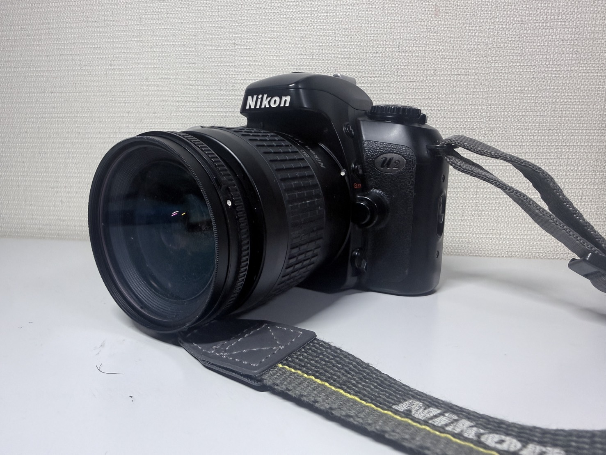
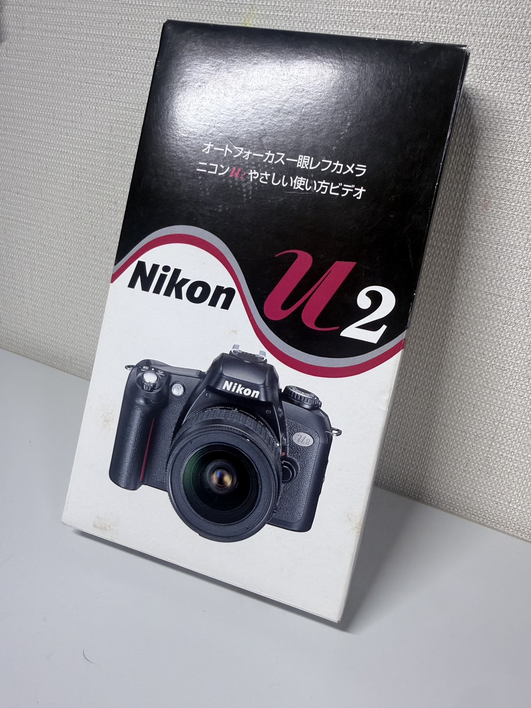
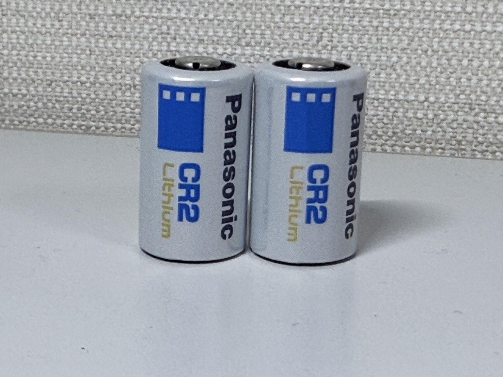

【Nicon U2】
【普通なのが異常】
基本情報
| メーカー | 【Nicon】 |
|---|---|
| 機種名 | 【Nicon U2】 |
| 発売年 | 【2003年】 |
| 使用フィルム | 【35mmフィルム】 |
| 撮影方式 | 【35mmフィルム一眼レフ】 |
| レンズマウント | 【Fマウント】 |
| シャッター | 【上下式フォーカルプレーンシャッター・30秒～1/2000秒】 |
| 露出 | 【フルモード（P・S・A・M）】 |
外観

見た目からしてもう”デジタルカメラ”にかなり近い代物ですね。 まぁこのカメラは”フィルムカメラ”ですけどほぼフィルム以外はデジタルカメラと同じような雰囲気ですね。
特徴
個人的には”特徴がないのが今のなっては特徴”になっている感じのイメージですね。
このカメラ自体一般庶民向け。一般人が使用するのが大前提だからマニア的見方をすると変態的要素は
かなり少なめです。そしてこのカメラ以降NiconのフィルムカメラF80しかないらしく、Niconフィルムカメラの
最後のエントリー機種（つまり最後の初心者用カメラ）らしいです。
このカメラ後で詳述しますが学校で手に入れた？（正確言えば借りてる状態）
なので状態はすごくきれいです。
で、漁っていたら無論説明書はあったのですが

なんとVHSの説明書？があった。内容などは公式様曰く公開できないためがざっくり言うと 「初心者向けにどんなふうに使うかの講習会用のビデオ」みたいな感じでした。 フィルムの入れ方とかの初歩的な説明とかP・Sとかのモード解説もあった。 こう言ったところからにじみ出ているように 「フィルムがまだ一般的だった最後の時代」のカメラだなぁって感じの印象を受けました。
いろんな人の記事を漁ったらこれは”NiconUシリーズ”の最終機？らしいですね。 まぁ発売が2003年、デジカメってかコンデジがじわじわ？来てる時代ですからね・・・。
スペック
フィルム時代最末期のカメラであるからして機能も充実しています。
測光もTTL測光/3D-25分割マルチパターン測光・DXコード対応（マニュアル設定はできず
ない場合は自動でISO100に設定）なので感度設定しなくていいとか
AUTOモード対応でデジカメ的な使い方ができたりとかもうとにかく普通に使うなら
難しいことしなくてもいいカメラですね。
そして日付写し込み機能もあります。このカメラは2049/12/31まで説明書曰く対応してるらしいので当分は
つかえますね。
こんな感じでみんなが思いつく機能は大体ついいてる感じです。
実際に使ってみて
弥冨での小旅行で使ってみましたが、かなり良かったです。
気持ちよく巻き上げられていく音は小気味よく、かなり快適でした。
いまさらあれですが、使用にはCR2電池を二本使用します。
CR2電池はあんまり一般的ではないので家電量販店とかで買うといいでしょう。
ですけどパナソニックとかのしっかりしたの買おうとすると1600～くらいかかるんで、
中国製みたいな安いの使うか、個人店とかの激安価格のところで買いましょう。

撮影について
実写はしてないんで偉そうなことはかけないんですが空打ちの感じだと心地よい巻き上げでした。
また実写等しましたら追記として追加します。
ちょっとした弥冨やの小旅行で使ってみましたが、
（この旅行について詳しくは、弥冨小旅行記事をご覧ください。）
で、実際に使ってみたんですが、めっちゃいいですね。前にF70Dを使ったんですが、AFでもあれとは
また違うような感じでした。やはりフィルムカメラ最末期なだけあって、操作方法とかいろんなところが
”デジタルカメラ”って感じでした。気を抜いたら何枚も何枚もパシャパシャ撮ってしまいそうな。
そんな感覚でした。今回は試しにAUTOのAFを使ってましたが、かなり良いですね・・・。
まだ現像は上がってきてませんが、結果が楽しみです。
入手について
上でちらっと書いた通り、これ学校の奴なんですよね。(2026/8~入手)
私今高校生で写真部に所属してるんですけど、なんかフィルム時代のカメラ
眠ってないかなぁとロッカーを漁ったら出てきて借りてます。（一緒にF70Dとフィルム14本発掘）
なので私の所有カメラの中だと異色の入手方法ですね。
因みにこれ当時どんな感じだったのかは知らないんですけど、ニコン公式の
国際保証書だけじゃなく、「あとあと3年安心パック」って保険に入ってたらしく、
それの申込書（お客様控え）まであってので結構しっかりしてるなぁと感じました。
金額
上で書いた通り、実質貰い物に近いのでただですが電池代として1600～くらいかかりました。
現在の状態
今のところは特に問題なく動作してます。ですが、入ってた鞄に入ってた紙曰く、修理に出してますね。
一回目はシーケンス基盤部作動不具合で修理。
二回目はErr表示が出るけど指摘の現象が出なかったけど、とりあえず関連機器を変えたそうです。
（納品書にはフォトレフレクターFPC部組を交換したらしい）
なのでそれだけが不安要素ですね。
まとめ
フィルム最末期のカメラなだけあっていろんなところが充実してて、「フイルムカメラの最終系」を
知るにはいいカメラだと思います。操作とかもほぼデジカメに近しいですし。
なので初心者用にはとても素晴らしいカメラだと思います。機会があったら使ってみるのも悪くないと
思います。
最後まで読んでいただきありがとうございました。